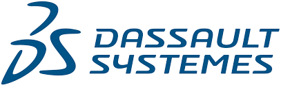

Dassault Systèmes1
Implemented a predictive maintenance model, reducing downtime and costs by 15%. Developed a 99%-accuracy machine learning model using class rebalancing and A/B testing. Leveraged ETL processes to handle large sensor datasets for machine failure predictions. Applied statistical analysis with Pipeline Pilot, improving model accuracy by 20%.

Ernst & Young2
I developed a computer vision application using Flutter and machine learning. The app scans objects through the device's camera, identifies them using YOLOv8, and opens related user manuals. It was a rewarding experience in mobile app development and computer vision.

Zamroo: The Selling Application3
I worked as a software tester, responsible for ensuring the quality of both web application and mobile application. I created test plans, executed test cases, identified and reported bugs, and collaborated with the development team. Additionally, I maintained test documentation and explored test automation. It was a valuable experience in software testing and quality assurance.